Books
-
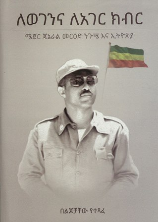
ለወገንና ለአገር ክብር lewegenna leager keber መርዕድ ንጉሤ -
ለወገንና ለአገር ክብር (ሜጀር ጀነራል መርዕድ ንጉሤ እና ኢትዮጵያ)ለወገንና ለአገር ክብር (ሜጀር ጀነራል መርዕድ ንጉሤ እና ኢትዮጵያ) Lewegenina Leager Kibir (Major General Mer'ed Nigusse Ena Ethiopia) Sons, Daughters
-
ለወገን ደራሽለወገን ደራሽ LeWegen Derash
-
ለ፵ው ቀን የተዘጋጀ የዘመነ ጽጌ ዚቅ (በየ፯ ዓመቱ ዙሮ የሚገኝ)ለ፵ው ቀን የተዘጋጀ የዘመነ ጽጌ ዚቅ (በየ፯ ዓመቱ ዙሮ የሚገኝ) L40W Ken Yetezegaje YeZemene Tsige Zik (Beye7 Ametu Zuro Yemigegn) Re'ese Debir Mezgebu H/Gebriel
-
ለውጢለውጢ Lewti Tsegay Asimerom · 2014
-
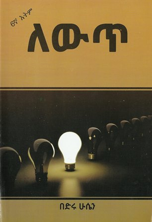
ለውጥ lewet በድሩ ሁሴን -
ለውጥ ፈላጊዎችለውጥ ፈላጊዎች Lewit Felagiwoch Yasin Muhammed
-
ለየቅልለየቅል Leyekil Chinuwa Achebe
-
ለደከመች ነፍስ መመሪያለደከመች ነፍስ መመሪያ Ledekemech Nefis Memeriya Abune Shinoda Salsawi
-
ለገሀነም ፀሎትለገሀነም ፀሎት Le-Gehanem Tselot Gezachew G/Egziabeher Degefe
-
ለጤንነት የሚበጅ የአመጋገብ ሥርዓትለጤንነት የሚበጅ የአመጋገብ ሥርዓት LeTeninet Yemibej YeAmegageb Sir'at Dorse Mogninete
-
ለፊዚክስ ሂሳባዊ ዝግጅት(የምህንድስና ጠይቦ ተከታታይ ፅሁፎች) ጥራዝለፊዚክስ ሂሳባዊ ዝግጅት(የምህንድስና ጠይቦ ተከታታይ ፅሁፎች) ጥራዝ ፩ LePhysics Hisabawi ZigJit (YeMihindisina Teybo Teketatay Tsuhufoch) Vol.1 Melaku Aynalem, Kalab Kassahun, Bahiru Kassahun · 2012
-
ሉላዊ ሴራና የተሸሸጉ ታሪኮችሉላዊ ሴራና የተሸሸጉ ታሪኮች Lulawi Serana Yetesheshegu Tarikoch Gidey G/Kidan
-
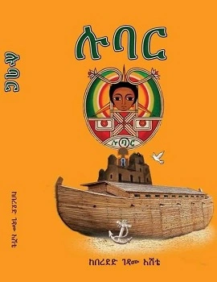
ሉባር lubar በረደድ ገዳሙ እሸቴ · 2012 -
ሉዓላዊነትና ዴሞክራሲ በኢትዮጵያሉዓላዊነትና ዴሞክራሲ በኢትዮጵያ Lualawinet Ena Democracy BeEthiopia Gebru Asrat · 2014
-
ሊቁ አለቃ ገብረሐና (፩፰፻፲፬ ፲፰፻፺፰ሊቁ አለቃ ገብረሐና (፩፰፻፲፬ ፲፰፻፺፰ Liku Aleka Gebrehana (1810-1898) Mesele Lema Habtewold · 2014
-
ሊብሮሊብሮ Libro Gnene Mekuria
-
ሊነጋ ነው (2007 እና አይቀሬው የዴሞክራሲ ምጽኣት)ሊነጋ ነው (2007 እና አይቀሬው የዴሞክራሲ ምጽኣት) Linega n New (2007 ena Aykerew Yedemokrasi Mits'at) Dagim Worku Adera
-
ሊዮናርዶ ዳቪንቺ ለልጆችሊዮናርዶ ዳቪንቺ ለልጆች Lionardo Davinci for kids K.M.M
-
ላሐ ማርያም (ወሰቄቃወ ድንግል)ላሐ ማርያም (ወሰቄቃወ ድንግል) Lahe Mariam (Weseqeqawe Dingl)
-
ላሐ ማርያም (የማርያም ልቅሶ እና ሌሎች ድርሳናት)ላሐ ማርያም (የማርያም ልቅሶ እና ሌሎች ድርሳናት) Lahe Mariam (YrMariam Likso Ena Leloch Dirsanat) Deacon Mesfin Tekeste · 2021
-
ላሜ ቦራላሜ ቦራ Lame Bora Dr.Birhanu Boggale, Dr.Nuru Mohammad Tahir
-
ላሜ ቦራላሜ ቦራ Lame Bora Yitateku Nega · 2015
-
ላሜ ቦራና ውለታ ቢሱ ማሞላሜ ቦራና ውለታ ቢሱ ማሞ Lame Borana Wileta Bisu Mamo Tikikil Gena
-
ላምባላምባ Lamba Kedir Assefa
-
ላስብበትላስብበት Lasibibet Frealem Shibabaw
-
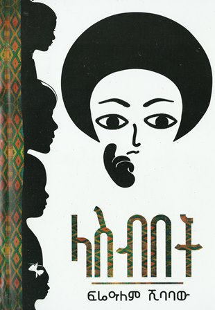
ላስብበት lasebbet ፍሬዓለም ሺባባው -
ላቦሩላቦሩ Laboru Te'Gstu Bediru
-
 ሌላ ሰው
Lela Sew
ሌላ ሰው
Lela Sew
-
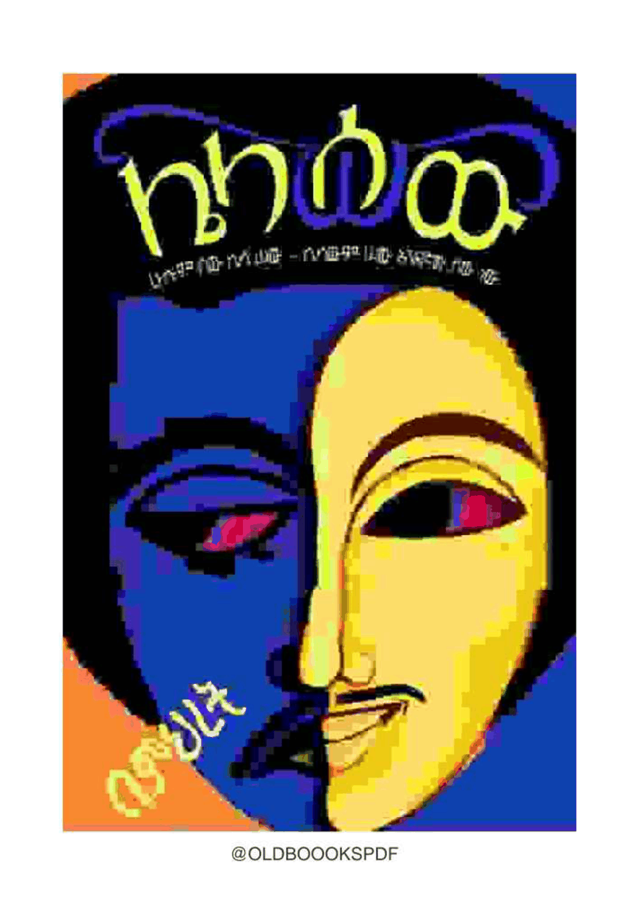
ሌላ ሰው LelaSew ምህረት ደበበ ገብረጻድቅ · 2015 -
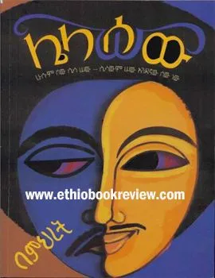
ሌላ ሰው lela sew ዶ/ር ምህረት ደበበ · 2010 -
ሌላ ሰውሌላ ሰው Lela Sew Dr.Mihiret Abebe · 2015
-
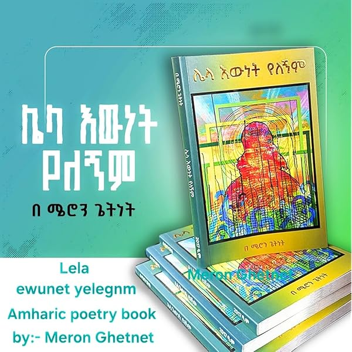
ሌላ ዕውነት የለኝም Lela Ewnet Yelegnem Meron Getnet · 2026 -
ሌላው እጅሌላው እጅ Lelaw E'ij Yilima Habteyes
-
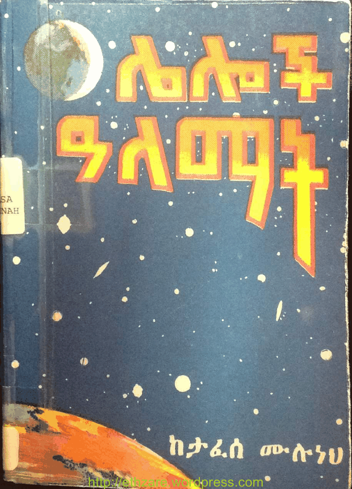
ሌሎች ዓለማት leloch alemat ታፈሰ ሙሉነህ, ተፈራ እሸቴ · 1985 -
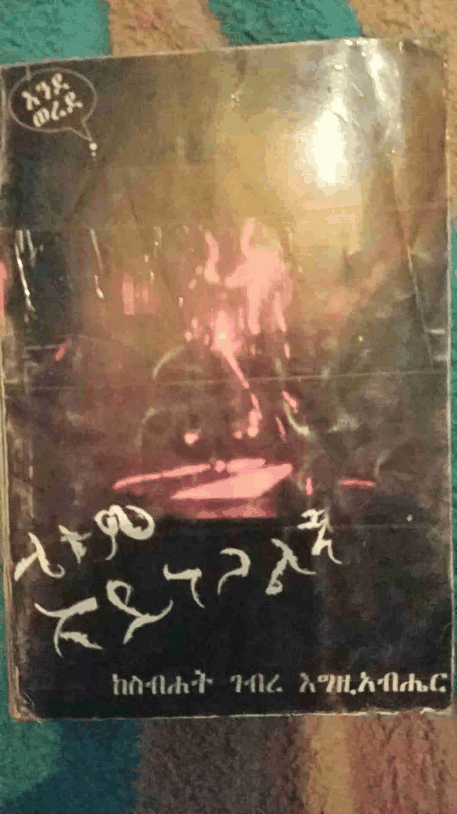
ሌቱም አይነጋልኝ letum aynegaleny ስብሀት ገብረእግዚአብሄር · 1999 -
 ሌቱም አይነጋልኝ
Letum Aynegalign
ሌቱም አይነጋልኝ
Letum Aynegalign
-
ሌቱም አይነጋልኝሌቱም አይነጋልኝ Letum Aynegalegne Sebhat Gebre Egziabehere
-
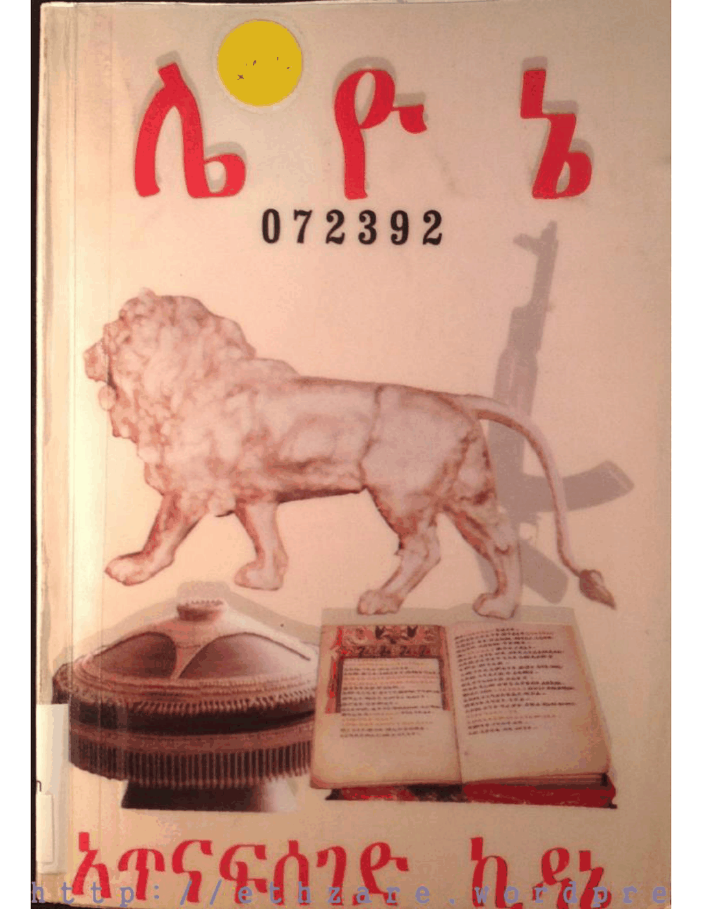
ሌ ዮ ኔ le yo ne አጥናፍሰገድ ኪዳኔ · 2007 -
ልሳነ መላእክት ወሊቃውንት አቋቋመ መልክዕ ወዚቅ ዘወርኃ በዓላት ወዘላልሳነ መላእክት ወሊቃውንት አቋቋመ መልክዕ ወዚቅ ዘወርኃ በዓላት ወዘላይ ቤት Lisane Mela'ekt Welikawint Akuakuame Melk'e Wezik Zewerha Bealat Wezelay Bet Memihir Haile Maryam Wondiye
-
ልሳነ መላእክት ወሊቃውንት (አቋቋመ መልክዕ ወዚቅ ዘወርኃ በዓላት ወዘልሳነ መላእክት ወሊቃውንት (አቋቋመ መልክዕ ወዚቅ ዘወርኃ በዓላት ወዘላይ ቤት) Llisane Mela'ekt Welikawint (Akuakuame Melk'e Wezik Zewerha Be'alat Wezelay Bet) Memihir Hailemariam Wondimiye
-
ልሳናተ ሴም (ግእዝ ትግራይ አማርኛ) ንጽጽራዊ መዝገበ ቃላትልሳናተ ሴም (ግእዝ ትግራይ አማርኛ) ንጽጽራዊ መዝገበ ቃላት Lisanate Sem (Ge'ez, Tigiray, Amarigna) Nitsitsirawi Mezgebe Kalat Zera Dawit Adihana
-
ልሳንልሳን Lisan Fireweyni Gebrehiwote · 2015
-
ልብስ ሰፊው እና አራቱ አይጦችልብስ ሰፊው እና አራቱ አይጦች Libis Sefiw Ena Aratu Aytoch Behailu G/Egiabher
-
ልብኹም ከመይ ይሠርሕ?ልብኹም ከመይ ይሠርሕ? How does Your Heart work? · 2008
-
ልብ ወለድ ታሪክልብ ወለድ ታሪክ Libb Walled Tarik Afawarq Gabra Iyasus · 1908
-
ልዑል መኮንን (ታሪክና መታሰቢያ በሥዕል)ልዑል መኮንን (ታሪክና መታሰቢያ በሥዕል) Le'uel Mekonnen (Tarikina Metasebia Be'sel) H.I.M Makonnen )duke of Harar Life And Records · 1957
-
ልዕልቱኣ ቅድስት ሒላርያልዕልቱኣ ቅድስት ሒላርያ Li'ltua Kidist Hilaria Haileyesus Mersha · 2020
-
ልዕልቲቱ ጣልያኖች እና የቀለበቱ ምስጢርልዕልቲቱ ጣልያኖች እና የቀለበቱ ምስጢር Le'eltitu Taliyanoch ena YeKelebetu Misitir George Shuyler
-
ልዘንክ አሙኜልዘንክ አሙኜ Lzenk Amuigne ደበበ ሰይፉ in የብርሃን ፍቅር
-
ልጄ ሆይ እንዳትከዳኝልጄ ሆይ እንዳትከዳኝ Lije Hoy Endatigodagn Komos Melaeke Genet Aba W/Giorgis Abeje
-
ልጄን እንዴት ላሳድግ?(እርግዝና የህፃን አመጋገብና አስተዳደግ)ልጄን እንዴት ላሳድግ?(እርግዝና የህፃን አመጋገብና አስተዳደግ) Lijen Endet Lasadig? (Erigizinana yeHitsan Amegageb Ena Asitedadeg) Taitu Ali
-
ልጅቱ — የዘመኖችዋልጅቱ — የዘመኖችዋ Lijitu — Yezemenochwa ደበበ ሰይፉ in የብርሃን ፍቅር
-
ልጅነቴ ማርና ወተቴልጅነቴ ማርና ወተቴ Lijinete Marina Wetete Alemayehu Kassa
-
ልጅነትልጅነት Lijinet Solomon Deresa
-
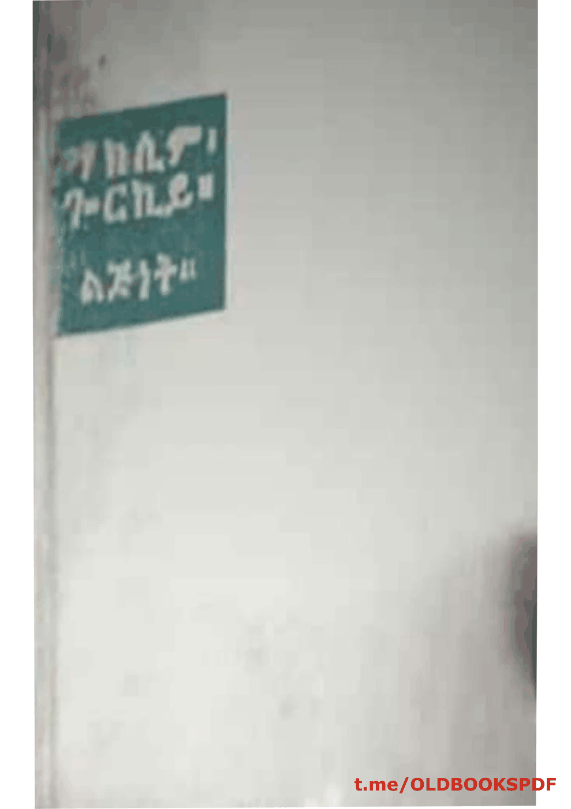
ልጅነት lejnet ማክሲም ጐርኪይ, በካፋ ኃይለ የሱስ -
ልጅነትልጅነት Lijinet Zeneba Wela Wega · 2012
-
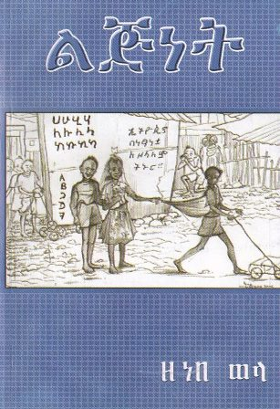
ልጅነት lejnet ዘነበ ወላ · 2007 -
ልጅነት ተመልሶ ኣይመጣምልጅነት ተመልሶ ኣይመጣም Lijinet Temeliso Aymetam Be'Emnet G/Amilak
-
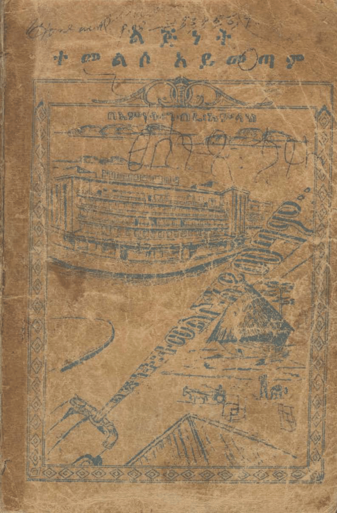
ልጅነት ተመልሶ አይመጣም lejnet temelso aymetam እምነት ገብረ አምላክ · 1959